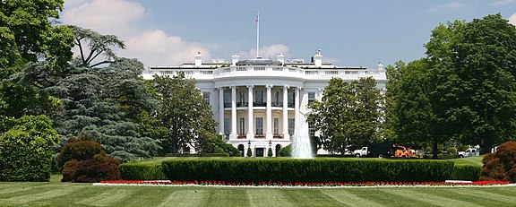

Washington, D.C., formally the District of Columbia and commonly called Washington or D.C., is the capital city and the federal district of the United States. The city is located on the east bank of the Potomac River, which forms its southwestern border with Virginia and borders Maryland to its north and east. 
Washington, D.C. was named for George Washington, a Founding Father, victorious commanding general of the Continental Army in the American Revolutionary War and the first president of the United States, who is widely considered the "Father of his country". The district is named for Columbia, the female personification of the nation.